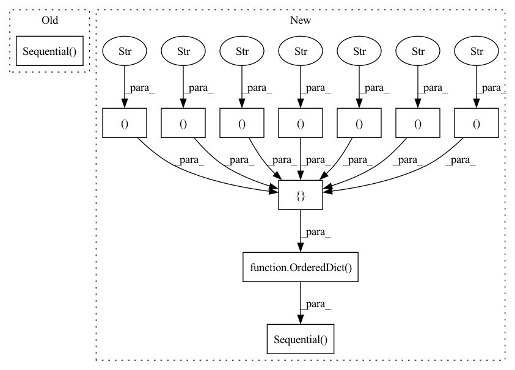

Pattern ID :823

Before Change
self.block_depth = (depth - 4) // (3 * 2)
self.conv = nn.Conv2d(in_channels, self.filters[0], (3, 3), stride=1, padding=1, bias=False)
self.blocks = nn.Sequential(
Block(self.filters[0], self.filters[1], 1, self.block_depth, dropout),
Block(self.filters[1], self.filters[2], 2, self.block_depth, dropout),
Block(self.filters[2], self.filters[3], 2, self.block_depth, dropout),
nn.BatchNorm2d(self.filters[3]),
nn.ReLU(inplace=True),
nn.AvgPool2d(kernel_size=8),
)
self.classification = nn.Linear(in_features=self.filters[3], out_features=labels)
self._initialize()
After Change
self.filters = [16, 1 * 16 * width_factor, 2 * 16 * width_factor, 4 * 16 * width_factor]
self.block_depth = (depth - 4) // (3 * 2)
self.f = nn.Sequential(OrderedDict([
("0_convolution", nn.Conv2d(in_channels, self.filters[0], (3, 3), stride=1, padding=1, bias=False)),
("1_block", Block(self.filters[0], self.filters[1], 1, self.block_depth, dropout)),
("2_block", Block(self.filters[1], self.filters[2], 2, self.block_depth, dropout)),
("3_block", Block(self.filters[2], self.filters[3], 2, self.block_depth, dropout)),
("4_normalization", nn.BatchNorm2d(self.filters[3])),
("5_activation", nn.ReLU(inplace=True)),
("6_pooling", nn.AvgPool2d(kernel_size=8)),
("7_flattening", nn.Flatten()),
("8_classification", nn.Linear(in_features=self.filters[3], out_features=labels)),
]))
self._initialize()
def _initialize(self):
In pattern: SUPERPATTERN
Frequency: 3
Non-data size: 11
Instances
Fragment ID: 2778154
Project Name: davda54/ada-hessian
Commit Name: 22c3dffc7595117a9bd78c07ad62fab0cc111488
Time: 2020-08-19
Author: david.samuel@seznam.cz
File Name: example/model/wide_res_net.py
M Class Name: WideResNet
N Class Name: WideResNet
M Method Name: __init__(6)
N Method Name: __init__(6)
M Parent Class: nn.Module
N Parent Class: nn.Module
M File Name: example/model/wide_res_net.py
N File Name: example/model/wide_res_net.py
M Start Line: 61
M End Line: 73
N Start Line: 63
N End Line: 75
'>
Before Change
class Discriminator(nn.Module):
def __init__(self, channels_img, features_d):
super(Discriminator, self).__init__()
self.disc = nn.Sequential(
// input: N x channels_img x 64 x 64
nn.Conv2d(
channels_img, features_d, kernel_size=4, stride=2, padding=1
),
nn.LeakyReLU(0.2),
// _block(in_channels, out_channels, kernel_size, stride, padding)
self._block(features_d, features_d * 2, 4, 2, 1),
self._block(features_d * 2, features_d * 4, 4, 2, 1),
self._block(features_d * 4, features_d * 8, 4, 2, 1),
// After all _block img output is 4x4 (Conv2d below makes into 1x1)
nn.Conv2d(features_d * 8, 1, kernel_size=4, stride=2, padding=0),
nn.Sigmoid(),
)
def _block(self, in_channels, out_channels, kernel_size, stride, padding):
return nn.Sequential(
nn.Conv2d(
After Change
class Discriminator(nn.Module):
def __init__(self, channels_img, features_d):
super(Discriminator, self).__init__()
self.disc = nn.Sequential(OrderedDict([
// input: N x channels_img x 64 x 64
("conv_in", nn.Conv2d(
channels_img, features_d, kernel_size=4, stride=2, padding=1
)),
("leaky_relu", nn.LeakyReLU(0.2)),
// _block(in_channels, out_channels, kernel_size, stride, padding)
("block1", self._block(features_d, features_d * 2, 4, 2, 1)),
("block2", self._block(features_d * 2, features_d * 4, 4, 2, 1)),
("block3", self._block(features_d * 4, features_d * 8, 4, 2, 1)),
// After all _block img output is 4x4 (Conv2d below makes into 1x1)
("conv_out", nn.Conv2d(features_d * 8, 1, kernel_size=4, stride=2, padding=0)),
("sigmoid", nn.Sigmoid()),
]))
def _block(self, in_channels, out_channels, kernel_size, stride, padding):
return nn.Sequential(OrderedDict([
("conv", nn.Conv2d(
'>
Fragment ID: 2778171
Project Name: ebartrum/lightning_gan_zoo
Commit Name: d0ec14e8cc60da7db50ea8e713b7b383c1d2a315
Time: 2021-01-15
Author: edward.bartrum@gmail.com
File Name: core/networks.py
M Class Name: Discriminator
N Class Name: Discriminator
M Method Name: __init__(3)
N Method Name: __init__(3)
M Parent Class: nn.Module
N Parent Class: nn.Module
M File Name: core/networks.py
N File Name: core/networks.py
M Start Line: 10
M End Line: 23
N Start Line: 11
N End Line: 24
'>
Before Change
class BasicUnit(nn.Module):
def __init__(self, channels: int, dropout: float):
super(BasicUnit, self).__init__()
self.block = nn.Sequential(
nn.BatchNorm2d(channels),
nn.ReLU(inplace=True),
nn.Conv2d(channels, channels, (3, 3), stride=1, padding=1, bias=False),
nn.BatchNorm2d(channels),
nn.ReLU(inplace=True),
nn.Dropout(dropout, inplace=True),
nn.Conv2d(channels, channels, (3, 3), stride=1, padding=1, bias=False),
)
def forward(self, x):
return self.block(x)
After Change
class BasicUnit(nn.Module):
def __init__(self, channels: int, dropout: float):
super(BasicUnit, self).__init__()
self.block = nn.Sequential(OrderedDict([
("0_normalization", nn.BatchNorm2d(channels)),
("1_activation", nn.ReLU(inplace=True)),
("2_convolution", nn.Conv2d(channels, channels, (3, 3), stride=1, padding=1, bias=False)),
("3_normalization", nn.BatchNorm2d(channels)),
("4_activation", nn.ReLU(inplace=True)),
("5_dropout", nn.Dropout(dropout, inplace=True)),
("6_convolution", nn.Conv2d(channels, channels, (3, 3), stride=1, padding=1, bias=False)),
]))
def forward(self, x):
return self.block(x)
'>
Fragment ID: 2777848
Project Name: davda54/ada-hessian
Commit Name: 22c3dffc7595117a9bd78c07ad62fab0cc111488
Time: 2020-08-19
Author: david.samuel@seznam.cz
File Name: example/model/wide_res_net.py
M Class Name: BasicUnit
N Class Name: BasicUnit
M Method Name: __init__(3)
N Method Name: __init__(3)
M Parent Class: nn.Module
N Parent Class: nn.Module
M File Name: example/model/wide_res_net.py
N File Name: example/model/wide_res_net.py
M Start Line: 9
M End Line: 17
N Start Line: 11
N End Line: 19